DC モーター制御
このデモでは設定値指令に追従して負荷変動に対する感度を下げる、以下の 3 つの方法を比較します。
- フィードフォワード指令
- 積分フィードバック制御
- LQR レギュレーション
DC モーター モデルの詳細は、「ご利用の前に: モデルの作成」を参照してください。
目次
問題の定義
電機子制御の DC モーターでは、印加電圧 Va によってシャフトの角速度 w が制御されます。

このデモでは、負荷変動 (モーター負荷によって対抗されるトルクの変化) に対する感度 w を下げる 2 つの方法を示します。

DC モーターの簡易モデルを上図に示しています。トルク Td は、負荷変動をモデル化します。このような変動によって誘発される速度変化を最小限に抑えなければなりません。
この例では、以下の物理定数を使用します。
R = 2.0; % Ohms L = 0.5; % Henrys Km = 0.1; Kb = 0.1; % torque and back emf constants Kf = 0.2; % Nms J = 0.02; % kg.m^2/s^2
最初に、2 つの入力 (Va、Td) と 1 つの出力 (w) を使用して、DC モーターの状態空間モデルを作成します。
h1 = tf(Km,[L R]); % armature h2 = tf(1,[J Kf]); % eqn of motion dcm = ss(h2) * [h1 , 1]; % w = h2 * (h1*Va + Td) dcm = feedback(dcm,Kb,1,1); % close back emf loop
メモ: モデルの次数を最小限に抑えるために状態空間形式を使用して計算します。
ここで、電圧 Va のステップ変化に対する角速度応答をプロットします。
stepplot(dcm(1));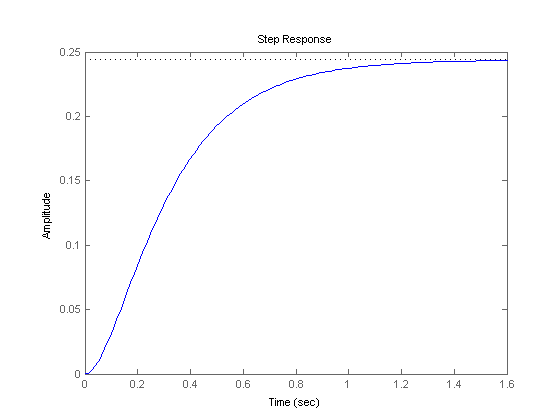
プロットを右クリックし、[特性: 整定時間] を選択して、整定時間を表示します。
フィードフォワード制御設計
この簡単なフィードフォワード制御構造を使用すると、角速度 w を所定の値 w_ref に設定できます。
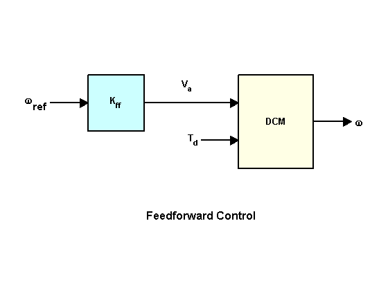
フィードフォワード ゲイン Kff は、Va から w への DC ゲインの逆数に設定する必要があります。
Kff = 1/dcgain(dcm(1))
Kff =
4.1000
負荷変動を考慮してフィードフォワード設計を評価するには、変動 Td = -0.1Nm (t=5 から t=10 秒の間) として、ステップ コマンド w_ref=1 に対する応答をシミュレートします。
t = 0:0.1:15; Td = -0.1 * (t>5 & t<10); % load disturbance u = [ones(size(t)) ; Td]; % w_ref=1 and Td cl_ff = dcm * diag([Kff,1]); % add feedforward gain set(cl_ff,'InputName',{'w_ref','Td'},'OutputName','w'); h = lsimplot(cl_ff,u,t); title('Setpoint tracking and disturbance rejection') legend('cl\_ff') % Annotate plot line([5,5],[.2,.3]); line([10,10],[.2,.3]); text(7.5,.25,{'disturbance','T_d = -0.1Nm'},... 'vertic','middle','horiz','center','color','r');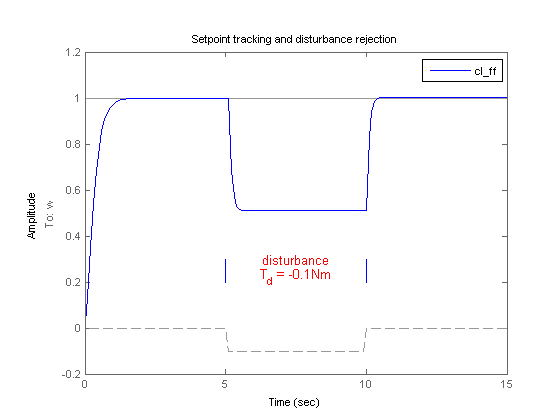
明らかに、フィードフォワード制御では負荷変動にうまく対処できません。
フィードバック制御設計
次に、以下のフィードバック制御構造を試してみます。
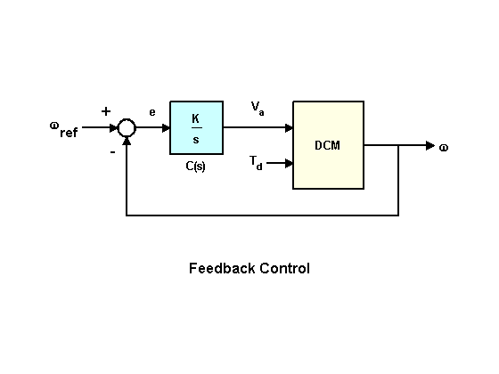
定常偏差をゼロにするには、以下の形式の積分制御を使用します。
C(s) = K/s
where K is to be determined.
開ループ 1/s * transfer(Va->w) に適用される根軌跡法を使用すれば、ゲイン K を決めることができます。
h = rlocusplot(tf(1,[1 0]) * dcm(1)); setoptions(h,'FreqUnits','rad/sec'); set(gca,'Xlim',[-15 5],'Ylim',[-15 15]);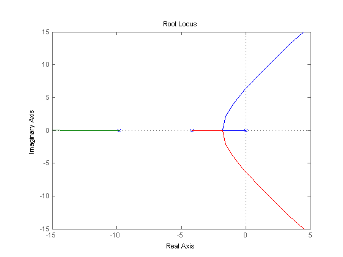
曲線をクリックして、ゲイン値と関連情報を読み取ります。ここで適切な選択は、K = 5 です。SISO 設計ツールには、このような設計に使用できる統合 GUI が用意されています (詳細は、ヘルプ sisotool を参照)。
この新しい設計を、同じテスト ケースの最初のフィードフォワード設計と比較します。
K = 5; C = tf(K,[1 0]); % compensator K/s cl_rloc = feedback(dcm * append(C,1),1,1,1); h = lsimplot(cl_ff,cl_rloc,u,t); set(cl_rloc,'InputName',{'w_ref','Td'},'OutputName','w'); title('Setpoint tracking and disturbance rejection') legend('feedforward','feedback w/ rlocus','Location','NorthWest')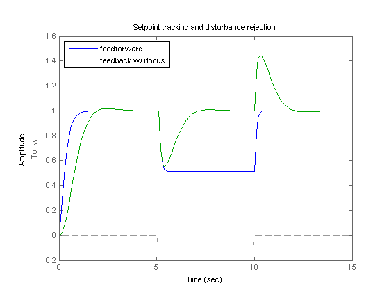
根軌跡設計の方が負荷変動の除去に適しています。
LQR 制御設計
さらに性能を改善するために、以下のようなフィードバック構造に対する線形二次レギュレーター (LQR) の設計を試してみます。
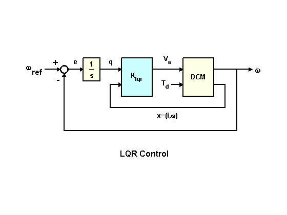
LQR スキームでは、誤差の積分のほかに、状態ベクトル x=(i,w) を使用して駆動電圧 Va を合成します。その結果、電圧は以下のような形式になります。
Va = K1 * w + K2 * w/s + K3 * i
where i is the armature current.
変動を除去するために、大きい積分誤差を抑制する、以下のようなコスト関数を使用します。
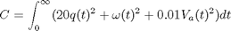
ここで
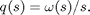
このコスト関数にとって最適な LQR ゲインは、以下のように計算されます。
dc_aug = [1 ; tf(1,[1 0])] * dcm(1); % add output w/s to DC motor model
K_lqr = lqry(dc_aug,[1 0;0 20],0.01);
次に、シミュレーション目的の閉ループ モデルを導出します。
P = augstate(dcm); % inputs:Va,Td outputs:w,x C = K_lqr * append(tf(1,[1 0]),1,1); % compensator including 1/s OL = P * append(C,1); % open loop CL = feedback(OL,eye(3),1:3,1:3); % close feedback loops cl_lqr = CL(1,[1 4]); % extract transfer (w_ref,Td)->w
これは、3 つの設計の閉ループ ボード線図を比較するプロットです。
bodeplot(cl_ff,cl_rloc,cl_lqr);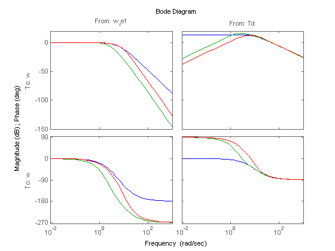
曲線をクリックし、システムを特定するか、データを調べます。
設計の比較
最後に、シミュレーション テスト ケースで 3 つの設計を比較します。
h = lsimplot(cl_ff,cl_rloc,cl_lqr,u,t); title('Setpoint tracking and disturbance rejection') legend('feedforward','feedback (rlocus)','feedback (LQR)','Location','NorthWest')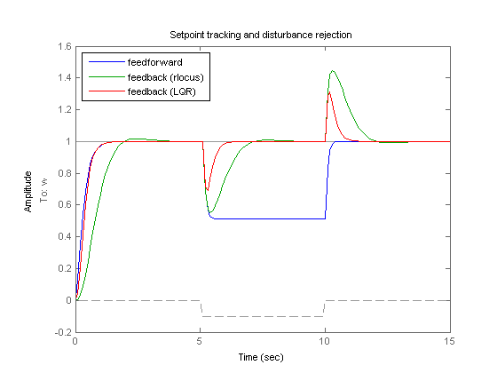
追加した自由度により、LQR 補償器が負荷変動の除去を最も効果的に実行できます (ここで紹介した 3 つの設計の中で)。